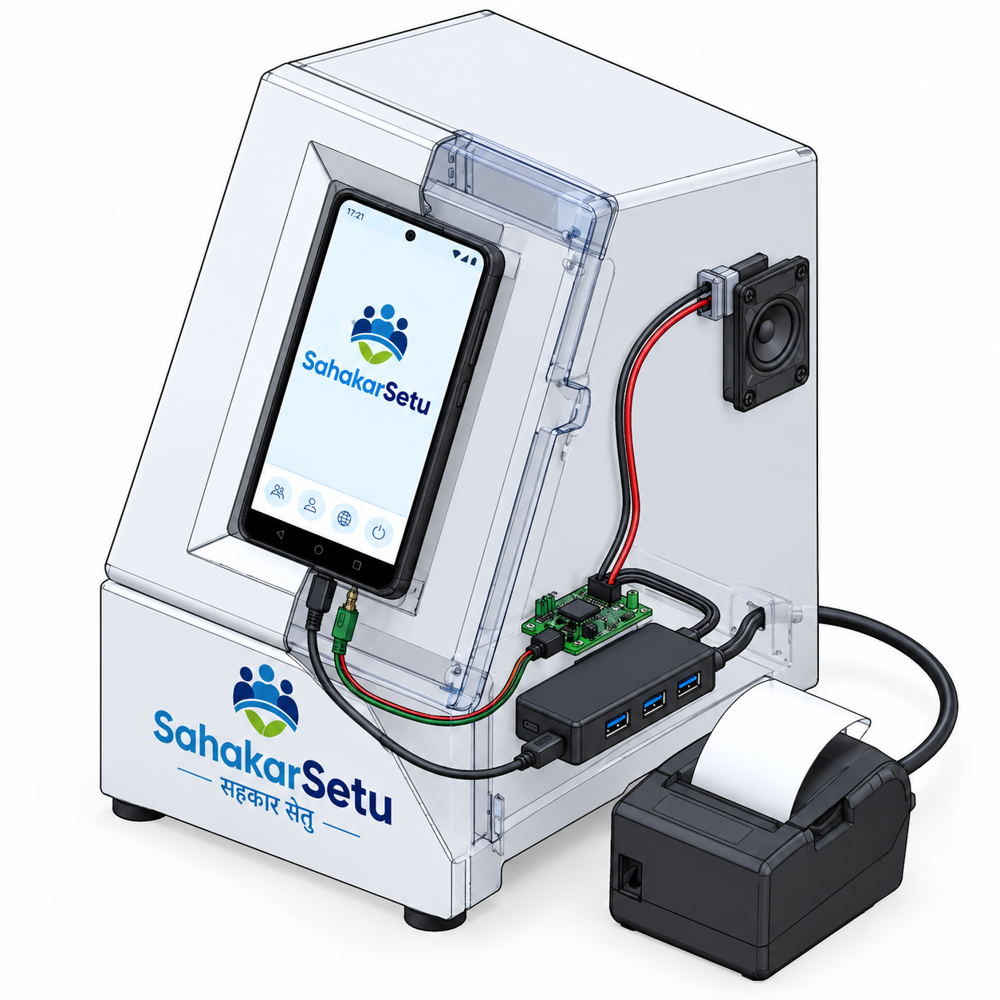

A purpose-built kiosk (Raspberry Pi 5 + touchscreen + power backup) costs ₹35,000–40,000 per unit. India has ~1.02 lakh PACS — that would need ≈₹220 crore for hardware alone (illustrative). Sahakar Setu instead repurposes a commodity Android phone (Android 8.0+, 2 GB RAM) — devices PACS staff already own or that cost ₹2,000–3,000 refurbished — and adds ₹600–900 of off-the-shelf peripherals. Same service, ~95% cheaper, and upgradable by swapping only the phone.
| # | Component | Spec | Role | Approx. cost |
|---|---|---|---|---|
| 1 | Android phone / tablet | Android 8.0+ (API 26+), 2 GB RAM min (4 GB preferred) | Main compute + touch display + mic + speaker fallback; runs the Capacitor kiosk APK | ₹2,000–3,000 (refurbished) |
| 2 | USB OTG cable | Micro-USB or USB-C (per phone) | Phone → hub data/power bridge | ₹50–100 |
| 3 | Powered USB hub | 4-port, externally powered | Connects printer + speaker; charges the phone; stable power for ESC/POS bursts | ₹250–400 |
| 4 | Amplifier circuit + speaker | 3 W+ mono, 3.5 mm or USB input | Loud, clear Hindi audio for low-literacy and elderly members | ₹150–250 |
| 5 | Thermal receipt printer | 58 mm or 80 mm, ESC/POS, USB | Prints grievance drafts, tracking IDs, receipts — the member's paper proof | ₹900–1,400 |
| 6 | Enclosure | Transparent acrylic / branded cardboard, phone mount, cable management | Physical presence, branding (सहकार सेतु), tamper-resistance, neat internal wiring | ₹200–500 |
| 7 | Power adapter | 5 V / 2 A (hub + printer) | Single mains input powers the whole kiosk | ₹100–150 |
Total per kiosk: ≈ ₹3,700–5,800 (excluding the phone) vs ₹35,000–40,000 for a Pi-based custom unit — roughly 85–90% cheaper, with the phone doubling as a backup device the PACS already has.
| Signal / power path | Detail |
|---|---|
| Mains → 5V/2A adapter | Feeds the powered hub and the printer |
| Phone ⇄ hub (OTG) | Single cable; hub powers the phone and routes data |
| Hub → printer (USB) | ESC/POS commands from the app print drafts/receipts |
| Hub → amplifier → speaker | Audio out at 3 W — audible across a PACS office |
| Phone mic → app → server | Voice captured in-app, STT/TTS via the server (or local Vosk on-device offline mode) |
The kiosk APK reuses the same React PWA codebase as the web client, wrapped in Capacitor with kiosk-specific native plugins:
| Plugin | Why a browser can't do this |
|---|---|
| Thermal Printer | Browsers cannot reliably drive USB OTG ESC/POS printers |
| Kiosk Lockdown (Device Owner mode) | Member cannot exit the app — browser tabs can be closed |
| Auto-start on boot | Kiosk is alive after a power cut without staff intervention |
| Session timeout + auto-clear | No member PII left on the shared screen; forced inactivity logout |
| Offline cache | Cached corpus, financial-literacy audio lessons and calculators work through poor connectivity |
| Crash recovery | App auto-restarts; a crashed browser tab does not |
| Remote config | Server pushes language packs / content updates to all kiosks |
Privacy rule: no member PII is ever stored on the device — everything goes straight to the server; sessions auto-clear after inactivity.
| Load | Draw |
|---|---|
| Printer (print burst) | ~1.5 A @ 5 V peak |
| Amplifier + speaker (3 W) | ~0.6 A @ 5 V |
| Phone charging via hub | ~0.5 A @ 5 V |
| Total (adapter 2 A) | ~2.6 A peak → 5 V / 3 A adapter recommended for continuous printing |
adb install -r) — voice chat, grievance preview and printing paths verified live.FINAL KIOSK.png (included above) — submitted with this document.